Nakatsu
Nakatsu · Oita
Nakatsu
Highlighted on the Oita map.
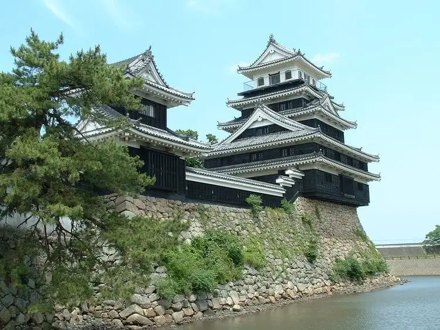
Sights
Kumo Hachiman Shrine
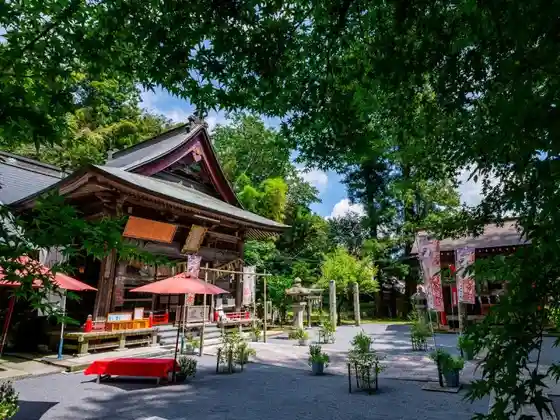
Sen Shrine (Komojinja)
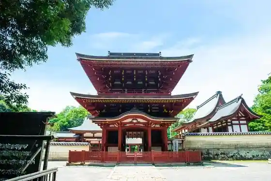
Kei Ishi Sono (Keisekien)
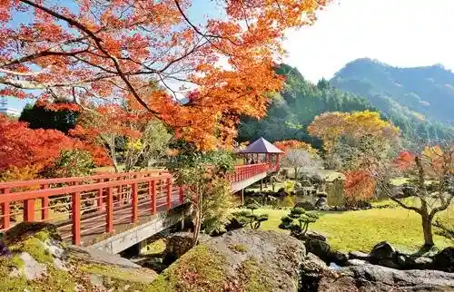
Nakatsu Shiro (Okudaira Ie History Museum)
Hachimen Sanso (Hachimensanso)
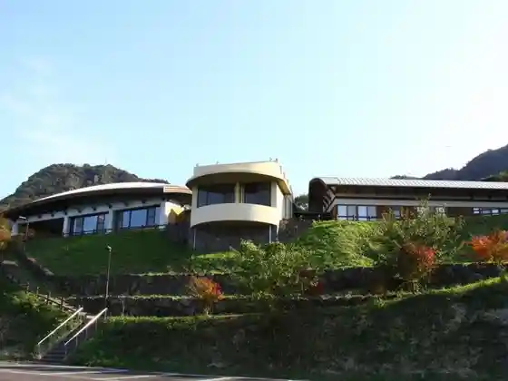
Yaba Kei (Yabakei) Dam
Tororo no Yu
Momiji Baths
Yaba Kei (Yabakei) Akua Park
Sarutobi Sen Tsubo Kyo (Sarutobisentsubokyo)
Nippon Isan Center Yaba Kei Fubutsu Kan (Yabakeifubutsukan)
Nakatsu Yaba Kei (Yabakei) Tourist Information
Murakami Ika Shiryo Kan
Oe Ika Shiryo Kan
Fukuzawa Yukichi Kyukyo
Nippon Isan ! Yabakei Yuran Daichi Ni Egai Ta Sansui Emaki no Michi Woyuku
Nakatsu History Museum
Nishitani Onsen
Roadside Station Yaba Topia
TOCOMA coffee&meal
Daifuku Senmonten Daifuku Iori
Rokugatsu Yoka (Rokugatsuyoka)
Yasuragi no Sato
Yaba Kei (Yabakei) Hashi (Oranda Hashi)
Sanko Kosumosu Sono
Hachimen Yama (Hachimenzan)
Roadside Station Yamakuni
Koa Yamakuni
Kyo Shuho (Kyoshuho) no Kei
Roadside Station Nakatsu
Ichimoku Hakkei (Hitomehakkei)
Yukichi Koruri
Meipuru Yaba Saikuringurodo
Hachimen Yama Kin'iro Onsen
Shin Yaba Kei Onsen Wakayama Onsen
Nembutsu (Nembutsu) Hashi Ma Hayashi (Mabayashi) Kyo
Nishiki Tani Onsen Seseragi no Sato Hana Ji Hana
Go Moto Tera (Goganji)
Shin Yaba Kei Tourist Information
Nakama Onsen
Iwato Yu
Ryokan Rokumeikan
Orito Onsen
Sen Kei Baths
Yakata Inaka no Gakko
Goryo Momiji
Nakatsu Ritsu Obata (Obata) Kinen Library
Shin Yaba Kei (Shinyabakei)
Kanaya Buke Yashikiato
Nakatsu Karage
Jisho Tera Taiga Do (Jishojitaigado)
Nakatsu Ki Village Kinen Art Museum
Horai Sono (Horaien)
Shio Yu
Nakatsu Yakusho
Dining
や台ずし 中津駅南口町
Ya Dai Zushi Nakatsu Eki Minamiguchi Machi

ふぁらく
Faraku
Spice イオンモール三光店
Spice Ionmooru Sankou Mise
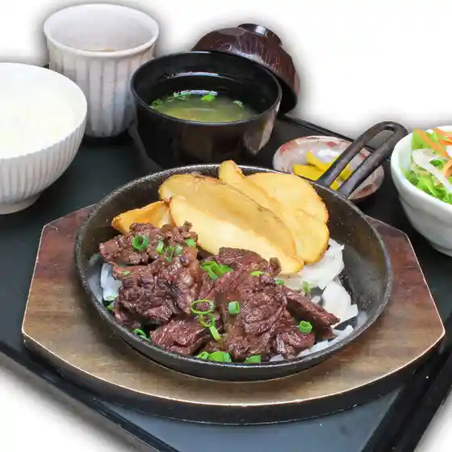
SYLVESTER
Sylvester
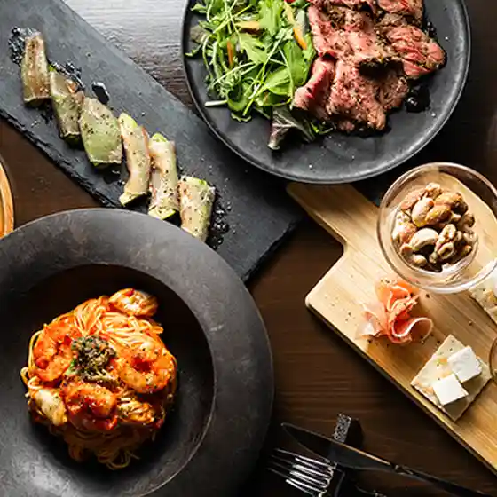
ディパ
Dipa
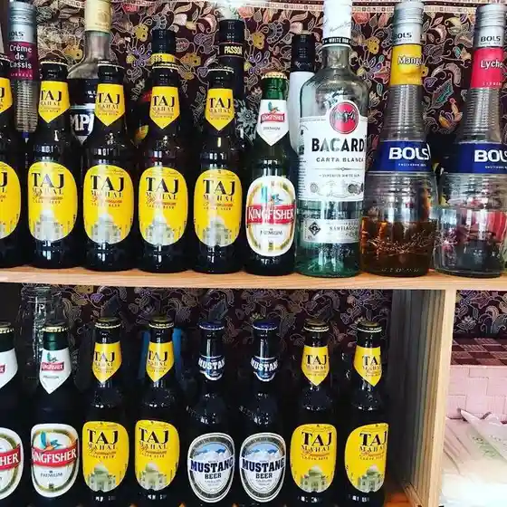
たにあらし
Taniarashi
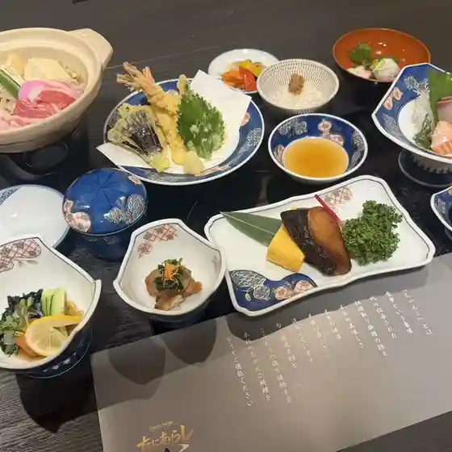
家庭料理 呑んた
Kateiryouri Non Ta
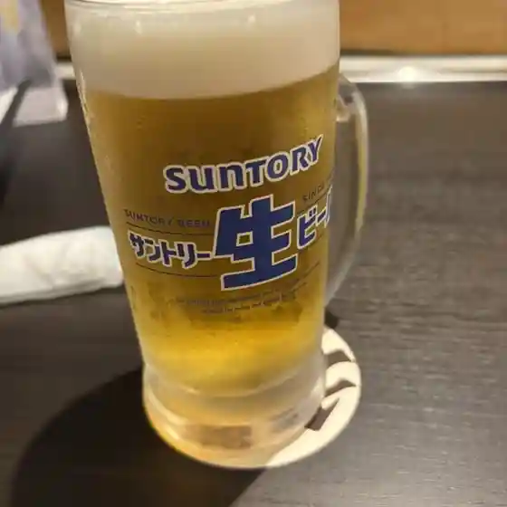
千一
Sen Ichi
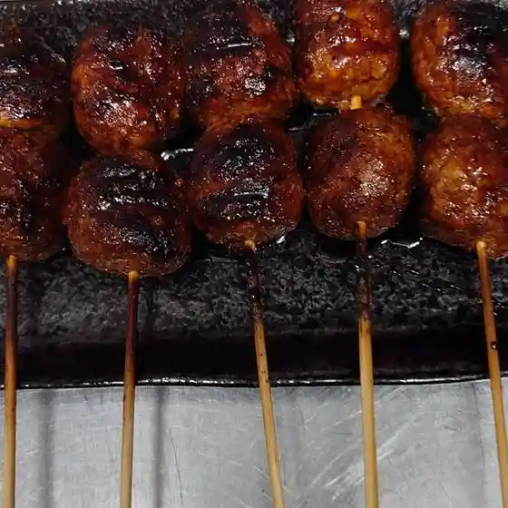
THE DRINK
The Drink
ディパ2号店 PRANSHI
Dipa 2 Gou Mise Pranshi
コメダ珈琲店 大分中津店
Komeda Koohii Mise Ooita Nakatsu Mise
ふくとん
Fukuton
中津味処 大花火
Nakatsu Ajidokoro Oohana Hi
かがやけ
Kagayake
一ツ家
Ichi Tsu Ie
おきな 守実店
Okina Shu Mi Mise
雨のち晴れ
Ame Nochi Hare
油
Abura
ごはんどき 中津店
Gohandoki Nakatsu Mise
居酒屋空
Izakaya Sora
風待ち珈琲
Kazamachi Chi Koohii
古民家かふぇ こずえ
Ko Minka Kafe Kozue
モモヤ
Momoya
ピノキオ
Pinokio
鶏屋 とくさん
Niwatori Ya Tokusan
季豆なカフェ
Ki Mame Na Kafe
IWATOYU CAFE
Iwatoyu Cafe
obento えんむすび
Obento Enmusubi
門前茶屋 のどか。
Monzen Chaya Nodoka .
日比谷鳥こまち
Hibiya Tori Komachi
嵐坊 中津店
Arashi Bou Nakatsu Mise
上宮永 清か
Jouguu Ei Kiyoshi Ka
ろくめいかん
Rokumeikan
とんかつ豊後
Tonkatsu Bungo
家元
Iemoto
無添くら寿司 大分中津店
Mu Soe Kura Sushi Ooita Nakatsu Mise
そば処 ほたか
Soba Tokoro Hotaka
伊和太
Iwa Ta
壱番亭 本店
Ichiban Tei Honten
福寿宴中国料理店
Fukuju Utage Chuugokuryouri Mise
ルーチェデルソーレ
Ruuchederusoore
矢野 うどん
Yano Udon
どんたく
Dontaku
丘
Oka
ぶあいそ
Buaiso
奴寿司
Yatsu Sushi
Dining Cafe Liebe
Dining Cafe Liebe
とりカラ
Tori Kara
文楽
Bunraku
焼肉 韓国料理 韓国苑 中津沖代店
Yakiniku Kankokuryouri Kankoku En Nakatsu Oki Dai Mise
たっとり屋
Tattori Ya
こうひいや
Kouhiiya
翔天食堂
Shouten Shokudou
田中醤油
Tanaka Shouyu
お菓子の菊家 中津店
O Kashi No Kiku Ie Nakatsu Mise
すりばち
Suribachi
ManaPono
Manapono
休憩所
Kyuukeijo
わたなべ
Watanabe
マイクロビストロ ベス
Maikurobisutoro Besu
Murakami Shokudo Nakatsu Oita Prefecture Kyushu
Murakami Shokudo Nakatsu Oita Prefecture Kyushu
Murakami Shokudo Nakatsu Oita Prefecture Kyushu
Murakami Shokudo Nakatsu Oita Prefecture Kyushu
Murakami Shokudo Nakatsu Oita Prefecture Kyushu
Murakami Shokudo Nakatsu Oita Prefecture Kyushu
Murakami Shokudo Nakatsu Oita Prefecture Kyushu
Murakami Shokudo Nakatsu Oita Prefecture Kyushu
Ide Champon Nakatsu Nakatsu Oita Prefecture Kyushu
Ide Champon Nakatsu Nakatsu Oita Prefecture Kyushu
Ide Champon Nakatsu Nakatsu Oita Prefecture Kyushu
Ide Champon Nakatsu Nakatsu Oita Prefecture Kyushu
Ide Champon Nakatsu Nakatsu Oita Prefecture Kyushu
Ide Champon Nakatsu Nakatsu Oita Prefecture Kyushu
Ide Champon Nakatsu Nakatsu Oita Prefecture Kyushu
Ide Champon Nakatsu Nakatsu Oita Prefecture Kyushu
Wafu Ajidokoro Kitaro Nakatsu Oita Prefecture Kyushu
Wafu Ajidokoro Kitaro Nakatsu Oita Prefecture Kyushu
Wafu Ajidokoro Kitaro Nakatsu Oita Prefecture Kyushu
Wafu Ajidokoro Kitaro Nakatsu Oita Prefecture Kyushu
Wafu Ajidokoro Kitaro Nakatsu Oita Prefecture Kyushu
Wafu Ajidokoro Kitaro Nakatsu Oita Prefecture Kyushu
Wafu Ajidokoro Kitaro Nakatsu Oita Prefecture Kyushu
Wafu Ajidokoro Kitaro Nakatsu Oita Prefecture Kyushu
Michi no Eki Nakatsu Nakatsu Oita Prefecture Kyushu
Michi no Eki Nakatsu Nakatsu Oita Prefecture Kyushu
Michi no Eki Nakatsu Nakatsu Oita Prefecture Kyushu
Michi no Eki Nakatsu Nakatsu Oita Prefecture Kyushu
Michi no Eki Nakatsu Nakatsu Oita Prefecture Kyushu
Michi no Eki Nakatsu Nakatsu Oita Prefecture Kyushu
Michi no Eki Nakatsu Nakatsu Oita Prefecture Kyushu
Michi no Eki Nakatsu Nakatsu Oita Prefecture Kyushu
Horaiken Nakatsu Oita Prefecture Kyushu
Horaiken Nakatsu Oita Prefecture Kyushu
Horaiken Nakatsu Oita Prefecture Kyushu
Horaiken Nakatsu Oita Prefecture Kyushu
Horaiken Nakatsu Oita Prefecture Kyushu
Horaiken Nakatsu Oita Prefecture Kyushu
Horaiken Nakatsu Oita Prefecture Kyushu
Horaiken Nakatsu Oita Prefecture Kyushu
Japanese Restaurant Tsubaki Nakatsu Oita Prefecture Kyushu
Japanese Restaurant Tsubaki Nakatsu Oita Prefecture Kyushu
Japanese Restaurant Tsubaki Nakatsu Oita Prefecture Kyushu
Japanese Restaurant Tsubaki Nakatsu Oita Prefecture Kyushu
Japanese Restaurant Tsubaki Nakatsu Oita Prefecture Kyushu
Japanese Restaurant Tsubaki Nakatsu Oita Prefecture Kyushu
Japanese Restaurant Tsubaki Nakatsu Oita Prefecture Kyushu
Japanese Restaurant Tsubaki Nakatsu Oita Prefecture Kyushu
Japanese Restaurant Tsubaki Nakatsu Oita Prefecture Kyushu
Japanese Restaurant Tsubaki Nakatsu Oita Prefecture Kyushu
Nakatsu Karaage Moriyama Manda Main Store Nakatsu Oita Prefecture Kyushu
Nakatsu Karaage Moriyama Manda Main Store Nakatsu Oita Prefecture Kyushu
Nakatsu Karaage Moriyama Manda Main Store Nakatsu Oita Prefecture Kyushu
Nakatsu Karaage Moriyama Manda Main Store Nakatsu Oita Prefecture Kyushu
Nakatsu Karaage Moriyama Manda Main Store Nakatsu Oita Prefecture Kyushu
Nakatsu Karaage Moriyama Manda Main Store Nakatsu Oita Prefecture Kyushu
Nakatsu Karaage Moriyama Manda Main Store Nakatsu Oita Prefecture Kyushu
Nakatsu Karaage Moriyama Manda Main Store Nakatsu Oita Prefecture Kyushu
Nakatsu Karaage Moriyama Manda Main Store Nakatsu Oita Prefecture Kyushu
Nakatsu Karaage Moriyama Manda Main Store Nakatsu Oita Prefecture Kyushu
Nakatsu Karaage Moriyama Manda Main Store Nakatsu Oita Prefecture Kyushu
Nakatsu Karaage Moriyama Manda Main Store Nakatsu Oita Prefecture Kyushu
Wafu Ajidokoro Kitaro Nakatsu Oita Prefecture Kyushu
Wafu Ajidokoro Kitaro Nakatsu Oita Prefecture Kyushu
Wafu Ajidokoro Kitaro Nakatsu Oita Prefecture Kyushu
Wafu Ajidokoro Kitaro Nakatsu Oita Prefecture Kyushu
Japanese Restaurant Tsubaki Nakatsu Oita Prefecture Kyushu
Japanese Restaurant Tsubaki Nakatsu Oita Prefecture Kyushu
Japanese Restaurant Tsubaki Nakatsu Oita Prefecture Kyushu
Japanese Restaurant Tsubaki Nakatsu Oita Prefecture Kyushu
Japanese Restaurant Tsubaki Nakatsu Oita Prefecture Kyushu
Japanese Restaurant Tsubaki Nakatsu Oita Prefecture Kyushu
Zenkaichaya Nakatsu Oita Prefecture Kyushu
Zenkaichaya Nakatsu Oita Prefecture Kyushu
Zenkaichaya Nakatsu Oita Prefecture Kyushu
Zenkaichaya Nakatsu Oita Prefecture Kyushu
Zenkaichaya Nakatsu Oita Prefecture Kyushu
Zenkaichaya Nakatsu Oita Prefecture Kyushu
Zenkaichaya Nakatsu Oita Prefecture Kyushu
Zenkaichaya Nakatsu Oita Prefecture Kyushu
Stay
東横ＩＮＮ大分中津駅前
Touyoko I N N Ooita Nakatsu Ekimae
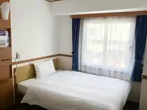
中津サンライズホテル
Nakatsu Sanraizuhoteru
スーパーホテル大分・中津駅前 天然温泉 扇城の湯
Suupaahoteru Ooita ・ Nakatsu Ekimae Tennen Onsen Ougi Shiro No Yu
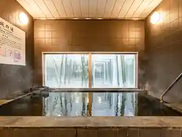
グランプラザ中津ホテル
Guranpuraza Nakatsu Hoteru
ホテルルートイン中津駅前
Hoteruruutoin Nakatsu Ekimae
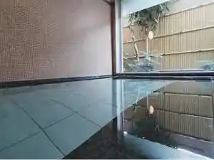
汽車ポッポ食堂と民宿・別邸
Kisha Poppo Shokudou To Minshuku ・ Bettei
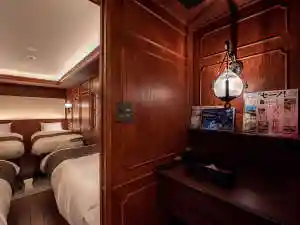
ＨＯＴＥＬ Ｒ９ Ｔｈｅ Ｙａｒｄ 中津
H O T E L R 9 T H E Y A R D Nakatsu
こがね山荘
Kogane Sansou
鍋屋
Nabeya
折戸温泉 小さなお宿 つきのほたる
Orito Onsen Chiisa Nao Yado Tsukinohotaru
やすらぎの郷やまくに
Yasuragino Sato Yamakuni